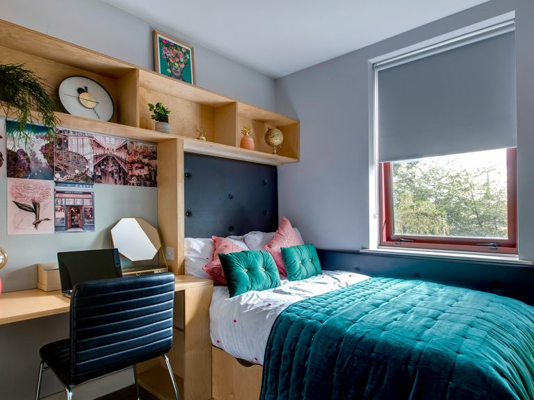

Accomodation
Welcome to the accomodation page where you may find information relating to cost of living, obtaining accomodation and how to fund this expense,
Click the button below to find out more!
Welcome to the accomodation page where you may find information relating to cost of living, obtaining accomodation and how to fund this expense,
Click the button below to find out more!
Welcome to the Dublin Student Website! As a college student in Ireland, one of the most pressing issues you may encounter is finding suitable accommodation. The housing market in Ireland, particularly in urban areas like Dublin, faces significant challenges, including high rent prices, limited availability, and competition from other renters. To navigate these challenges, it's essential to start your accommodation search early, explore various options such as student accommodations, shared apartments, or renting a room in a private house, and consider factors like proximity to your college, transportation options, and budget constraints.
In addition to accommodation, college life in Ireland offers a wealth of opportunities for personal and academic growth. From engaging classes and vibrant campus communities to exciting extracurricular activities and cultural events, there's something for everyone to enjoy. However, managing your time, finances, and well-being effectively is key to making the most out of your college experience.
Our platform is here to support you every step of the way. Whether you're looking for academic resources, career guidance, mental health support, or tips on maintaining a healthy work-life balance, we've curated a range of articles, videos, and interactive tools to help you succeed. Additionally, we provide insights into the latest campus events, job opportunities, internships, and study abroad programs to help you make the most informed decisions about your college journey.
1. Budget Planning: Plan your budget carefully to manage your expenses effectively, including rent, groceries, transportation, and leisure activities. Consider using budgeting apps or spreadsheets to track your spending.
2. Get Involved: Join student organizations and clubs to meet new people, explore your interests, and enhance your leadership skills. Participating in extracurricular activities can also enrich your college experience and build your resume.
3. Prioritize Well-being: Take care of your mental and physical health by maintaining a balanced lifestyle. Practice self-care routines, prioritize sleep, exercise regularly, and seek support from campus resources if needed.
4. Academic Success: Stay organized and manage your time effectively to balance your academic workload and extracurricular commitments. Utilize study groups, tutoring services, and academic advisors to excel in your courses.
5. Explore Opportunities: Stay informed about internships, part-time jobs, study abroad programs, and volunteer opportunities. These experiences can help you gain valuable skills, expand your network, and explore career options.
Understanding the cost of living in Ireland is crucial for planning your budget as a college student. From rent to groceries, transportation to entertainment, managing your expenses effectively is essential to maintain financial stability throughout your college years. To help you navigate the cost of living in Ireland, we've compiled guides, tips, and government information to assist you in budgeting wisely and making informed financial decisions.
Cost of Living Guides: Explore our curated selection of cost of living guides tailored specifically for college students in Ireland. These guides provide detailed information on average expenses, budgeting tips, and cost-saving strategies to help you stretch your budget further. Check out our Cost of Living Guide.
Government Information: Stay informed about government support programs, grants, and subsidies available to students in Ireland. Whether it's financial assistance for accommodation, tuition fees, or living expenses, government resources can provide valuable support to alleviate financial burdens. Visit the Government Student Support page for more information.
College-specific Resources: Check with your college's student services department for additional resources and support related to the cost of living. Many colleges offer financial aid programs, student discounts, and housing assistance services to help students manage their expenses effectively.
Budgeting Tips: Watch the following video for practical tips on budgeting as a college student in Ireland:
Finding suitable accommodation in Ireland can be challenging, but there are various resources and methods available to assist students in their search. One of the most popular approaches is to explore accommodation websites specifically tailored for students, such as Daft.ie Student Accommodation and CollegeCribs.ie. These platforms offer listings for student-friendly accommodation options, including shared apartments, student residences, and private rentals. Additionally, leveraging social media platforms like Facebook groups and university forums can be effective in connecting with other students seeking roommates or subletting opportunities. Many colleges also provide assistance with accommodation through their student services departments, offering resources, advice, and even partnerships with affiliated accommodation complexes.
When searching for accommodation, it's essential to consider factors such as location, budget, amenities, and proximity to campus. Be sure to visit potential accommodations in person, if possible, to assess the condition of the property and meet any potential roommates or landlords. It's also advisable to review rental agreements carefully and understand your rights and responsibilities as a tenant.
In addition to online resources and social networks, students can also seek guidance from their college's accommodation office or student union. These organizations often provide support and information related to accommodation options, rental contracts, and tenant rights. Some colleges even maintain partnerships with local landlords or accommodation complexes, offering exclusive housing options and favorable rental terms for students.
Finally, don't hesitate to reach out to fellow students, alumni, or local residents for recommendations and advice on finding accommodation in Ireland. Networking within the college community and seeking referrals from trusted sources can help streamline the accommodation search process and ensure a positive living experience during your time as a student.
Apart from using accommodation websites and social networks, students can also explore alternative options such as homestays, hostels, or house-sharing arrangements with other students. These options may offer unique experiences and cost-saving benefits compared to traditional accommodation arrangements. Additionally, it's essential to be aware of accommodation scams and fraudulent listings when searching for housing online. Always verify the legitimacy of listings and communicate directly with landlords or property managers to ensure a safe and secure housing arrangement. Remember to prioritize your safety and well-being when selecting accommodation options and seek assistance from trusted sources if you encounter any issues during your search.
For more information and tips on finding accommodation in Ireland, check out these helpful resources: